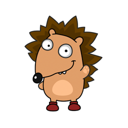

|  | Ёжики защищены от внешней агрессии колючим панцирем, который спасает их от тех, кто хочет поживиться вкусным и нежным мясом ежа. Но не стоит считать это животное и совершенно безобидным, все-таки это хищник. Да, он не питается волками и лисами, но только потому, что уступает им в размерах. А вот закусить червячком или даже змеей ему вполне под силу. |